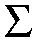

Consider the action of the non-zero real numbers Rx
on Rn
| t.ej = t j ej , | (4.10) |
| 0 = |  | tn(n+1)/2-|b| Lb pb(K) , |
|
(4.11) |
Proof.
We induct on m to construct numbers
t1, t2, ...,
tk(n-k) in
Rx having the property that, for all
a in Cn,k
with |a| = m, the intersection
of the Schubert varieties
The case m=0 is trivial, as |a|=0 implies that a=0 and X0 is a single (real) point in Gr(k, n). Suppose we have constructed t1, t2, ..., tm in Rx with the above properties.
Let a be in Cn, k with |a|=m+1 and set Z0 to be the intersection of the Schubert variety Xa with the hyperplane defined by pa = 0. By Theorem 4.5, Z0 is the union of the Schubert varieties Xb for all b in Cn,k that are covered by a. Consider the intersection of Z0 with the Schubert varieties X(t1.L), X(t2.L), ..., X(tm.L). By our assumption that each Schubert variety Xb with |b|=m meets the intersection of the Schubert varieties X(t1.L), X(t2.L), ..., X(tm.L) transversally, Z0 will meet that intersection of Schubert varieties transversally if no two Schubert varieties Xb and Xc with |b|=|c|=m have a point in common with that intersection.
Since the intersection of Xb and Xc is a union of Schubert varieties (of smaller dimension), this would imply that a Schubert variety Xe of dimension less than m meets the intersection of the Schubert varieties X(t1.L), X(t2.L), ..., X(tm.L). Consider a fixed k-plane K in Xe. By Equation (4.11), the condition for t.L to meet K non-trivially (that is ,for K to lie in X(t.L)) is a polynomial in t of degree at most |e|, which is less than m. Thus no k-plane K in some Schubert variety Xe with dimension less than m lies in the intersection of the m Schubert varieties X(t1.L), X(t2.L), ..., X(tm.L). We conclude that the intersection of Z0 with those Schubert varieties is transverse.
Since each component Xb of Z0 meets that intersection of Schubert varieties in d(b) real points, we conclude that Z0 meets that intersection transversally in the sum over all b covered by a of d(b) real points. By (4.8) this sum is just d(a).
For t in R, let Zt be set of points in Xa that satisfy the polynomial (4.11). For non-zero t, this is the intersection of Xa with the Schubert variety X(t.L), that is, those k-planes in Xa that meet t.L non-trivially. Since L has no vanishing Plücker coordinates, the constant term of that polynomial is pa(K), and so by Theorem 4.5, Z0 is the intersection of Xa with the hyperplane Ha defined by pa(K)=0.
By our previous arguments, Z0 meets the Schubert varieties X(t1.L), X(t2.L), ..., X(tm.L) transversally (over C) in d(a) real points. Thus there exists a small positive number number Ea such that for t between 0 and Ea (inclusive), Zt meets the Schubert varieties X(t1.L), X(t2.L), ..., X(tm.L) transversally (over C) in d(a) real points. Thus, for t in this range, Xa meets the Schubert varieties X(t.L), X(t1.L), X(t2.L), ..., X(tm.L) transversally (over C) in d(a) real points.
Let tm+1 be the minimum of these numbers Ea over all a with weight |a| = m+1. Then for any a in Cn, K with |a| = m+1, Xa meets the Schubert varieties X(t1.L), X(t2.L), ..., X(tm.L), X(tm+1.L) transversally (over C) in d(a) real points. Q.E.D.